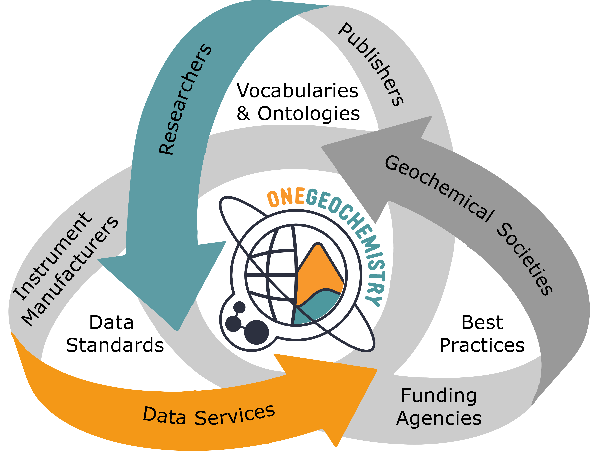

Our Mission
Rationale
Geochemical data have applications in many disciplines including geology, cosmology, environment, resources (groundwater, minerals, energy), geohealth, ocean and agriculture. As such, geochemical data play an important role in at least six of the United Nations Sustainable Development Goals. To support these disciplines and goals, there is a growing need to provide advice and support the implementation of data quality assurance/quality control (QA/QC) validation methods for laboratories, repositories, publishers and policy makers. When provenance, methodology and a measure of data quality are consistently documented others will be enabled to trust, interpret and reuse data. In enabling and simplifying the (re)use of geochemical data, OneGeochemistry will help to facilitate acceleration of the generation of new geoscientific knowledge and discoveries.

As OneGeochemistry organises collaboration and coordination of data reporting standardisation efforts that are non-unique across the diverse geochemistry communities, this initiative fills a niche previously unoccupied. Standardisation efforts have always focused on national, programmatic or less centralised levels. The formalisation of OneGeochemistry and endorsement by societies and associations will enable the initiative to develop and promote influential, community-driven data conventions and best practices necessary to build a global network of high-quality, trusted geochemical data. These actions will enable FAIRer geochemical data, simplifying data (re)use which will both contribute to many UN Sustainable Development goals and accelerate the generation of new geoscientific knowledge and discoveries.
Starting OneGeochemistry
As of December 2022, the OneGeochemistry initiative is acting as the OneGeochemistry CODATA Working Group under the International Science Council to bring together the disparate geochemistry initiatives across Scientific Unions, Associations, Societies and Commissions. Over two years, this Working Group will be utilised to recruit a larger membership base to the initiative that will then be able to vote on a long-term governance structure for OneGeochemistry. The OneGeochemistry initiative invites you, other researchers, data groups and initiatives to help make the OneGeochemistry vision come true, by making geochemical data more standardised and interoperable between institutions and nations creating a global network of geochemical data resources. For more information please visit the Participate section.
OneGeochemistry seeks to create a global geochemical data network that facilitates and promotes discovery of, and access to, geochemical data through coordination and collaboration among international geochemical data providers by:

- Developing internationally endorsed best practices for FAIR geochemical data.
- Defining requirements for data documentation (method, samples, data quality, etc.).
- Developing and implement interoperability standards for geochemical data to enable machine-to-machine exchange and integration of geochemical data.
- Aligning with modern technology, e.g. semantic web standards.
- Using, where possible, internationally endorsed vocabularies.
Team
Secretary & Coordinator:
Alexander Prent
Interim Board Members:
Kerstin Lehnert, Columbia University, representing the Astromaterials Data System,
Marthe Klöcking, University of Göttingen, representing DIGIS for GEOROC 2.0
Kirsten Elger, German Research Centre for Geosciences, representing GFZ Data Services and EPOS Multi-Scale Laboratories
Lesley Wyborn, Australian National University, AuScope Virtual Research Environments
Dominik Hezel, Goethe University Frankfurt, representing NFDI4Earth and MetBase
Lucia Profeta, Columbia University, representing EarthChem
Angus Nixon, University of Adelaide, representing the AuScope Geochemistry Network
The Briefest History of Geochemistry
By Lesley Wyborn
Geochemistry emerged as a discipline in its own right around 1838 and since then, acquisition and analysis of geochemical data have become pervasive. Initially geochemical data was acquired using manual ‘wet chemical’ techniques and only major elements and a few trace elements were routinely recorded. Results were reported in typeset tables in publications, and a publication rarely contained data on more than 15 samples. For the first 120 years little changed, but by the 1960’s a technological revolution began to take place in geochemistry: analytical systems became more automated and microanalytical in-situ techniques were progressively developed. The volumes of data generated increased rapidly and the diversity of elements and isotopes analysed soon covered the periodic table: the data tsunami began. As more and more automated techniques became available, it became very difficult to share all geochemical data through tables in paper publications, and data was reported in supplementary papers that could only be retrieved through direct contact with the author: the data were no longer part of the publication and were easily and often lost. However, as analytical technologies advanced, technologies to store and curate geochemical data over the long term did not keep up with these developments. Even with the emergence of the internet, the global geochemical community was unable to organise data in a way that it could be digitally curated, shared and even repurposed for new use cases. In the last 30 years major databases that store geochemical data emerged, and although many did not survive, EarthChem and GEOROC have been sustained over decades and continue to provide valuable online, published geochemical datasets and showcase the potential of harnessing data into authoritative sources to generate new scientific discoveries. Today, the Internet can connect multiple globally distributed databases in real-time. We now urgently need to focus on creating the digital standards and agreeing on best practices that will make any online geochemistry dataset Findable, Accessible, Interoperable and Reusable (FAIR) by both humans and machines. The recently formed OneGeochemistry CODATA Working Group is seeking to both harness and harmonise existing groups working towards global data sharing and promulgate best practices and standards.
Recommended Reading
The following, alphabetic references represent a good start into the various topics of FAIR data management.
Geochemical data are vital for understanding Earth’s past, present and future. However, currently only a fraction of geochemical data are findable, accessible, interoperable and reusable, limiting their use in the broadest range of scientific studies. There is an urgent need for international coordination of geochemical data and methods to unlock their full research potential.
Chamberlain, K. J., Lehnert, K. A., McIntosh, I. M., Morgan, D. J., & Wörner, G. 2021. Time to change the data culture in geochemistry. Nature Reviews Earth & Environment, 2(11), 737–739. https://doi.org/10.1038/s43017-021-00237-w
Jackson I and Wyborn L 2008. One Planet: One Geology? The Google Earth revolution and the geological data deficit. Environmental Geology,53(6), 1377-1380. http://dx.doi.org/10.1007/s00254-007-1085-z
Communicating chemical knowledge is at the core of the IUPAC mission and underlies the success of the chemistry enterprise. In the global economy of the 21st century, this involves exchange among computer systems along with the expert scientists who use them. To enable the application of IUPAC outputs in the digital environment, IUPAC must augment its efforts to enable accessibility and interpretation by machines as well as humans. The Union must adapt to a digital work culture to engage in its mission of sustainable development, common language and free exchange of scientific information. [Frey 2014, https://doi.org/10.1515/ci.2014.36.1.14]
The Committee on Publications and Cheminformatics Data Standards (CPCDS)(https://iupac.org/body/024) is charged to develop standards that enable and “promote interoperable and consistent transmission, storage, and management of digital [chemical information] content.” Since 2016, the CPCDS Subcommittee on Cheminformatics Data Standards has been tasked to explore the needs of the chemical community with the objective of coordinating the collective expertise of relevant IUPAC Divisions and Committees and external global organizations. A special issue of Chemistry International on “Research Data, Big Data and Chemistry” was edited by the Subcommittee for the 49th General Assembly in São Paulo (https://iupac.org/etoc-alert-chemistry-international-jul-sep-2017/)
As demonstrated in related communities of practice such as crystallography, machine readable scientific definitions and standard data formats facilitate accurate reporting, further scientific analysis and processing of measurements. Collective sharing of data within a domain enables the generation of new insights that are applicable more broadly. The adoption of standard file formats and standard identifiers across the community and stakeholders greatly aids in workflows to accurately publish and share data in digital venues. [Bruno 2020, https://charlestonlibraryconference.com/here-come-the-data/]
Developing and disseminating digital representations of IUPAC intellectual assets is not simply a software problem. Criteria for machine readability needs to be robust, function consistently across many different computer systems, and be based on accepted Internet protocols. The FAIR Data Principles describe high level criteria for enabling data and associated information to be Findable, Accessible, Interoperable and Re-usable for both humans and machines in a distributed digital environment. These principles provide a good starting point for understanding what is required to enable data to be effectively shared and allows IUPAC to tap into many motifs for digital exchange emerging in the data sciences and informatics expert communities. [Wilkinson et al.,https://doi.org/10.1038/sdata.2016.18]
McEwen, L.R, 2020. Towards a Digital IUPAC. Chemistry International, vol. 42, no. 2, pp. 15-17. https://doi.org/10.1515/ci-2020-0203
The National Imaging Facility (NIF) provides Australian researchers with state-of-the-art instrumentation—including magnetic resonance imaging (MRI), positron emission tomography (PET), X-ray computed tomography (CT) and multispectral imaging – and expertise for the characterisation of animals, plants and materials.
To maximise research outcomes, as well as to facilitate collaboration and sharing, it is essential not only that the data acquired using these instruments be managed, curated and archived in a trusted data repository service, but also that the data itself be of verifiable quality. In 2017, several NIF nodes collaborated on a national project to define the requirements and best practices necessary to achieve this, and to establish exemplar services for both preclinical MRI data and clinical ataxia MRI data.
In this paper we describe the project, its key outcomes, challenges and lessons learned, and future developments, including extension to other characterisation facilities and instruments/modalities.
Mehnert, A. J., Janke, A., Gruwel, M., Goscinski, W. J., Close, T., Taylor, D., Narayanan, A., Vidalis, G., Galloway, G., and Treloar, A., 2019. Putting the Trust into Trusted Data Repositories: A Federated Solution for the Australian National Imaging Facility. International Journal of Digital Curation,14 (1), 102–113. https://doi.org/10.2218/ijdc.v14i1.594
Stall, S., Cruse, P., Cousijn, H., Cutcher-Gershenfeld, J., de Waard, A., Hanson, B., Heber, J., Lehnert, K., Parsons, M., Robinson, E., Witt, M., Wyborn, L., and Yarmey, L., 2018. Data Sharing and Citations: New Author Guidelines Promoting Open and FAIR Data in the Earth, Space, and Environmental Sciences. Science Editor. 41(3), 83-87. https://www.csescienceeditor.org/wp-content/uploads/2018/11/CSEv41n3_text_83-87.pdf
The geoscience and chemistry communities have numerous common practices and dependency on data standards. Recent efforts from the International Union on Pure and Applied Chemistry (IUPAC) and the American Geophysical Union (AGU) are to explore and collaborate on approaches and sharing lessons learned on efforts to implement the FAIR Guiding Principles as they apply to data in their respective communities. This paper summarizes their efforts-to-date highlighting the importance of existing communities, Scientific Unions, standards bodies and societies in taking deliberate steps to move and encourage researcher adoption of the FAIR tenets.
Stall, S, McEwen, L, Wyborn, L, Hoebelheinrich, N, and Bruno., I, 2020. Growing the FAIR community at the intersection of the geosciences and pure and applied chemistry. Data Intelligence 2(2020), 139–150. https://doi.org/10.1162/dint_a_00036
Stall, S., Yarmey, L., Cutcher-Gershenfeld, J., Hanson, B, Lehnert, K., Nosek, B., Parsons, M., Robinson, E., and Wyborn, L., 2019. Making Scientific Data Fair. Nature 570, 27-29. https://doi.org/10.1038/d41586-019-01720-7
There is an urgent need to improve the infrastructure supporting the reuse of scholarly data. A diverse set of stakeholders—representing academia, industry, funding agencies, and scholarly publishers—have come together to design and jointly endorse a concise and measureable set of principles that we refer to as the FAIR Data Principles. The intent is that these may act as a guideline for those wishing to enhance the reusability of their data holdings. Distinct from peer initiatives that focus on the human scholar, the FAIR Principles put specific emphasis on enhancing the ability of machines to automatically find and use the data, in addition to supporting its reuse by individuals. This Comment is the first formal publication of the FAIR Principles, and includes the rationale behind them, and some exemplar implementations in the community.
Wilkinson, M. D., Dumontier, M., Aalbersberg, Ij. J., Appleton, G., … Mons, B., 2016. The FAIR Guiding Principles for scientific data management and stewardship. In Scientific Data 3, 1, https://doi.org/10.1038/sdata.2016.18
We present ten simple rules that support converting a legacy vocabulary—a list of terms available in a print-based glossary or in a table not accessible using web standards—into a FAIR vocabulary. Various pathways may be followed to publish the FAIR vocabulary, but we emphasise particularly the goal of providing a globally unique resolvable identifier for each term or concept. A standard representation of the concept should be returned when the individual web identifier is resolved, using SKOS or OWL serialised in an RDF-based representation for machine-interchange and in a web-page for human consumption. Guidelines for vocabulary and term metadata are provided, as well as development and maintenance considerations. The rules are arranged as a stepwise recipe for creating a FAIR vocabulary based on the legacy vocabulary. By following these rules you can achieve the outcome of converting a legacy vocabulary into a standalone FAIR vocabulary, which can be used for unambiguous data annotation. In turn, this increases data interoperability and enables data integration.
Cox SJD, Gonzalez-Beltran AN, Magagna B, Marinescu M-C 2021. Ten simple rules for making a vocabulary FAIR. PLoS Computational Biology 17(6): e1009041. https://doi.org/10.1371/journal.pcbi.1009041
OneGeochemistry Articles & Documents
The OneGeochemistry team has published a number of articles to define the goals of this initiative and its ongoing development.
Addtional technical papers and documentations are archived in our Zenodo community.
The majority of geochemical and cosmochemical research is based upon observations and, in particular, upon the acquisition, processing and interpretation of analytical data from physical samples. The exponential increase in volumes and rates of data acquisition over the last century, combined with advances in instruments, analytical methods and an increasing variety of data types analysed, has necessitated the development of new ways of data curation, access and sharing. Together with novel data processing methods, these changes have enabled new scientific insights and are driving innovation in Earth and Planetary Science research. Yet, as approaches to data-intensive research develop and evolve, new challenges emerge. As large and often global data compilations increasingly form the basis for new research studies, institutional and methodological differences in data reporting are proving to be significant hurdles in synthesising data from multiple sources. Consistent data formats and data acquisition descriptions are becoming crucial to enable quality assessment, reusability and integration of results fostering confidence in available data for reuse. Here, we explore the key challenges faced by the geo- and cosmochemistry community and, by drawing comparisons from other communities, recommend possible approaches to overcome them. The first challenge is bringing together the numerous sub-disciplines within our community under a common international initiative. One key factor for this convergence is gaining endorsement from the international geochemical, cosmochemical and analytical societies and associations, journals and institutions. Increased education and outreach, spearheaded by ambassadors recruited from leading scientists across disciplines, will further contribute to raising awareness, and to uniting and mobilising the community. Appropriate incentives, recognition and credit for good data management as well as an improved, user-oriented technical infrastructure will be essential for achieving a cultural change towards an environment in which the effective use and real-time interchange of large datasets is common-place. Finally, the development of best practices for standardised data reporting and exchange, driven by expert committees, will be a crucial step towards making geo- and cosmochemical data more Findable, Accessible, Interoperable and Reusable by both humans and machines (FAIR).
Klöcking M, Wyborn L, Lehnert KA, Ware B, Prent AM, Profeta L, Kohlmann F, Noble W, Bruno I, Lambart S, Ananuer H, Barber ND, Becker H, Brodbeck M, Deng H, Deng K, Elger K, Franco GdS, Gao Y, Ghasera KM, Hezel DC, Huang J, Kerswell B, Koch H, Lanati AW, Maat Gt, Martínez-Villegas N, Yobo LN, Redaa A, Schäfer W, Swing MR, Taylor RJM, Traun MK, Whelan J, Zhou T (2023). Community recommendations for geochemical data, services and analytical capabilities in the 21st century. Geochimica et Cosmochimica Acta http://dx.doi.org/10.1016/j.gca.2023.04.024
Lehnert, Kerstin, Klöcking, Marthe, Elger, Kirsten, Wyborn, Lesley, Prent, Alexander, ter Maat, Geertje, & Hezel, Dominik C. 2022. OneGeochemistry Interim Governance. Zenodo. https://doi.org/10.5281/zenodo.6566075
Prent AM, Hezel DC, Klöcking M, Wyborn L, Farrington R, Lehnert K, Elger K, Profeta L (in press). Innovating and networking global geochemical data resources through OneGeochemistry. Elements
Acknowledgements
Many of the images on these pages come from pixabay.